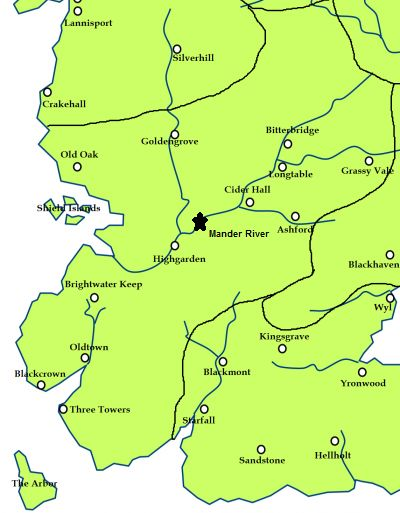

Mander
The river Mander is the largest river in the Reach. It is a large, powerful river. It is a slow-moving river, wide with snags and sandbars to trap the unwary ship. Tributaries of the Mander include the Blueburn and the Cockleswent. Settlements along the Mander include Tumbleton, Bitterbridge, Longtable, Cider Hall, and Highgarden.
The upper reaches of the Mander are muddy and rough and as they near Highgarden, they settle down and become clear and calm.
Historically, the ironborn would raid up the river Mander all the way to Bitterbridge. During the reign of House Gardener, the kings of the Reach armed the smallfolk of the Shield Islands, which sit near the mouth of the river, to guard the approaches and warn those further inland of coming attacks.
A thousand years ago House Manderly lived at the banks of the mighty river Mander, but they were driven away by House Gardener.
Map on Next page.
